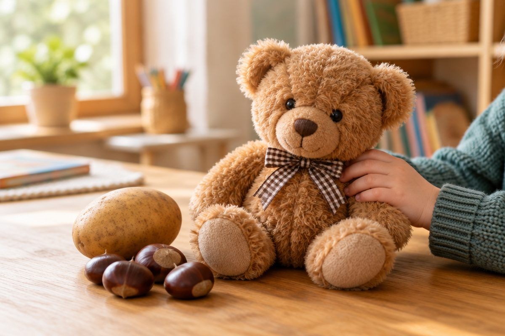

전체 단원 › 1학년 1학기 › 국어 › 2단계 · 받침 ㄱ ㄴ ㅁ
글자 아래에 자음이 붙으면 어떻게 읽을까?

"곰"을 읽어 봐요. '고' 아래에 ㅁ이 하나 더 붙어 있지요? 글자 아래를 받치는 자음, 받침을 만나요.
받침이 뭐예요?
글자 맨 아래에 붙는 자음을 받침이라고 해요.
받침이 붙으면 소리가 끝에서 닫혀요.
가 → 각 · 가 → 간 · 가 → 감
받침 ㄱ [윽]
혀 뒤쪽을 올려 소리를 막아요.
"윽" 하고 끝나는 느낌이에요.
국 · 약 · 수박 · 북
받침 ㄴ [은]
혀끝을 윗잇몸에 대고 끝내요.
콧소리가 "은~" 하고 나요.
눈 · 산 · 손 · 문
받침 ㅁ [음]
입술을 꼭 닫고 끝내요.
"음~" 하고 입이 다물어져요.
곰 · 봄 · 밤 · 엄마 · 감자
핵심 낱말
- 받침
- 글자 맨 아래에 붙는 자음이에요.
- 받침 ㄱ
- 혀 뒤로 소리를 막아요. 국, 약.
- 받침 ㄴ
- 혀끝을 윗잇몸에 대요. 눈, 산.
- 받침 ㅁ
- 입술을 꼭 닫아요. 곰, 봄.
꼭 알아야 할 표현
| 각 | 가 + 받침 ㄱ | |
| 간 | 가 + 받침 ㄴ | |
| 감 | 가 + 받침 ㅁ | |
| 국 | 🍲 그릇에 담아 먹는 국물 음식 | |
| 약 | 💊 아플 때 먹는 것 | |
| 수박 | 🍉 여름 과일 | |
| 눈 | 👀 보는 곳, ⛄ 겨울에 내리는 눈 | |
| 산 | ⛰️ 높이 솟은 땅 | |
| 손 | ✋ 팔 끝의 손 | |
| 곰 | 🐻 몸집이 큰 동물 | |
| 엄마 | 👩 어머니를 다정하게 부르는 말 | |
| 감자 | 🥔 땅속에서 자라는 채소 |
한 줄 정리
- 받침은 글자 맨 아래에 붙는 자음이에요.
- 받침 ㄱ은 혀 뒤, ㄴ은 혀끝, ㅁ은 입술을 닫으며 끝나요.
- 가 → 각, 간, 감처럼 받침에 따라 소리와 뜻이 달라져요.
학교 교육과정 연결
- [2국04-01] 한글 자모의 이름과 소릿값을 알고 정확하게 발음하고 쓴다.
- [2국02-01] 글자, 단어, 문장, 짧은 글을 정확하게 소리 내어 읽는다.